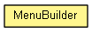

com.armandorv.cnpd.web.client.view.util.builder
Class MenuBuilder
java.lang.Object
 com.armandorv.cnpd.web.client.view.util.builder.MenuBuilder
com.armandorv.cnpd.web.client.view.util.builder.MenuBuilder
public class MenuBuilder
- extends java.lang.Object

Class to build GXT Menu instances, offer methods to execute an step by step building process.
- Author:
- armandorv
|
Method Summary |
MenuBuilder |
build(com.sencha.gxt.widget.core.client.menu.MenuItem item)
|
MenuBuilder |
build(com.sencha.gxt.widget.core.client.menu.MenuItem item,
com.google.gwt.resources.client.ImageResource icon)
Build a menu item and add it to menu. |
MenuBuilder |
build(com.sencha.gxt.widget.core.client.menu.MenuItem item,
com.google.gwt.resources.client.ImageResource icon,
boolean enabled)
Build a menu item and add it to menu. |
com.sencha.gxt.widget.core.client.menu.Menu |
get()
|
| Methods inherited from class java.lang.Object |
clone, equals, finalize, getClass, hashCode, notify, notifyAll, toString, wait, wait, wait |
MenuBuilder
public MenuBuilder()
build
public MenuBuilder build(com.sencha.gxt.widget.core.client.menu.MenuItem item,
com.google.gwt.resources.client.ImageResource icon,
boolean enabled)
- Build a menu item and add it to menu.
- Parameters:
item - item to add.icon - icon of the item.enabled - if the item must be enabled.
- Returns:
- the builder instance to continue the process.
build
public MenuBuilder build(com.sencha.gxt.widget.core.client.menu.MenuItem item,
com.google.gwt.resources.client.ImageResource icon)
- Build a menu item and add it to menu.
- Parameters:
item - item to add.icon - icon of the item.
- Returns:
- the builder instance to continue the process.
build
public MenuBuilder build(com.sencha.gxt.widget.core.client.menu.MenuItem item)
get
public com.sencha.gxt.widget.core.client.menu.Menu get()
- Returns:
- Menu built during the building process.
Copyright © 2012 JBoss, a division of Red Hat. All Rights Reserved.